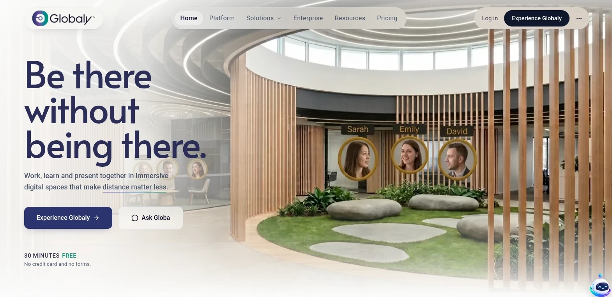
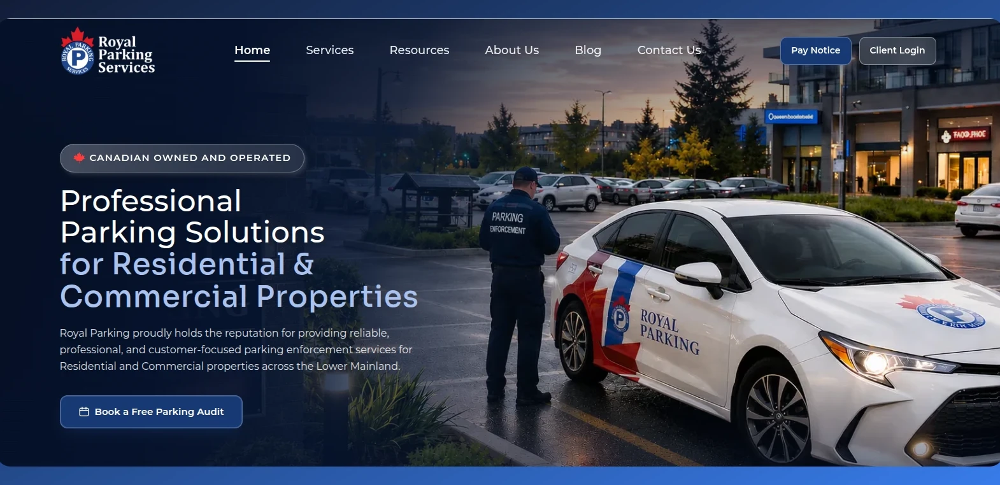
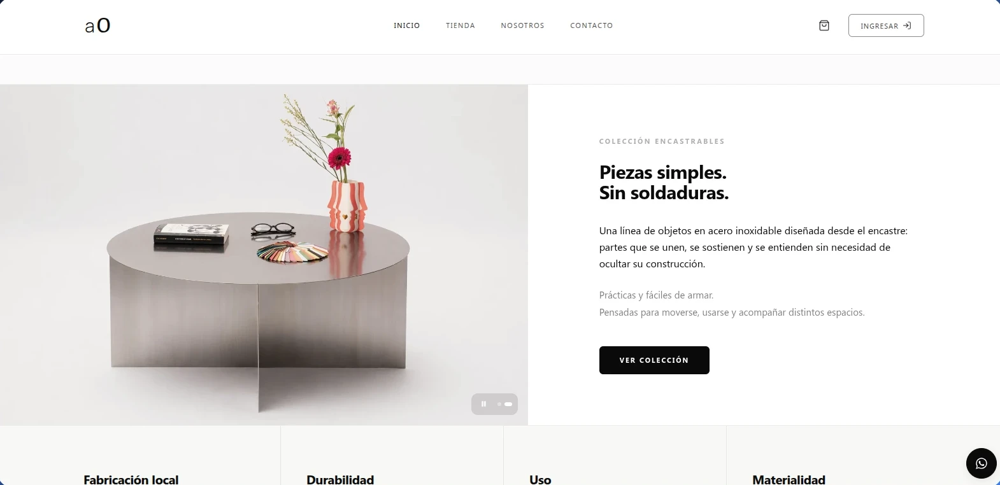
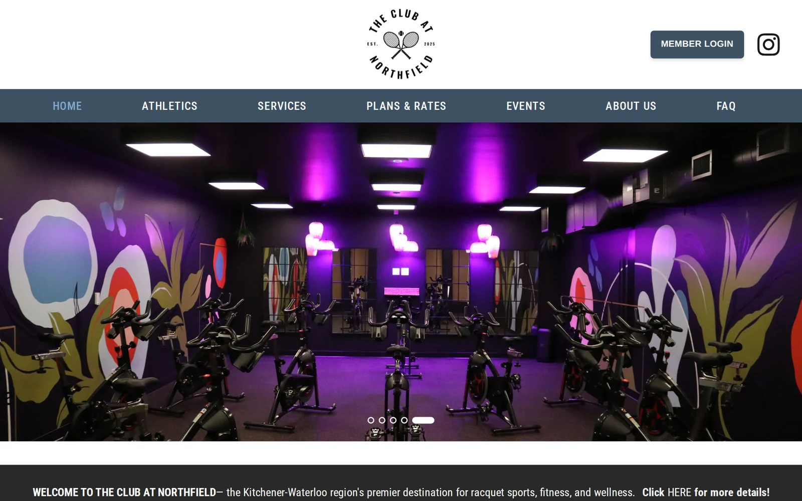
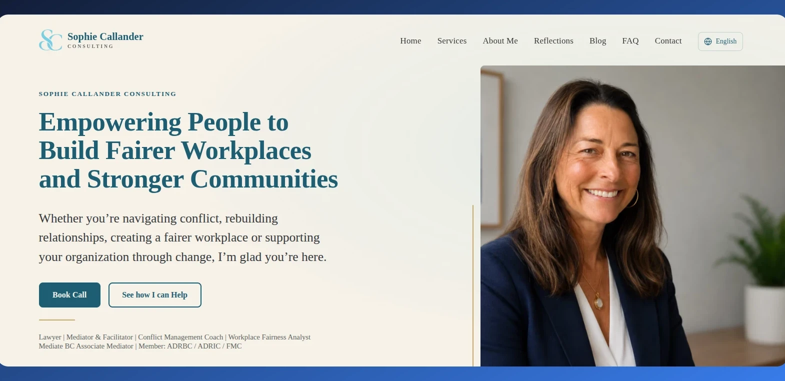
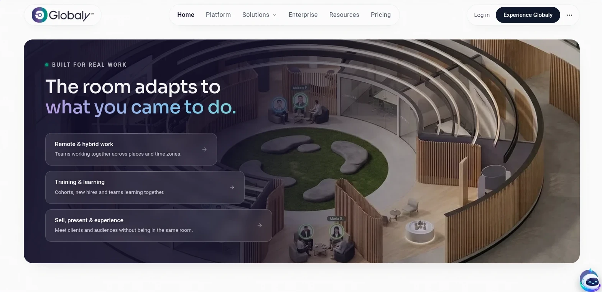
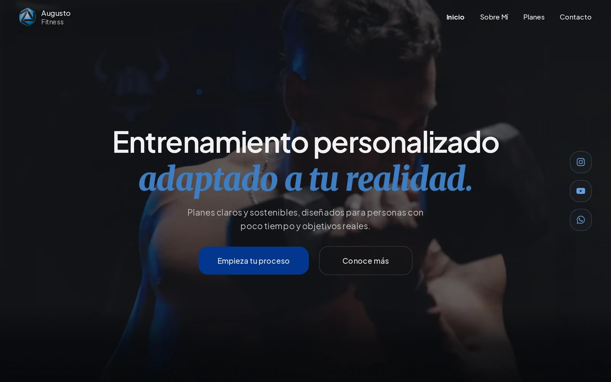

1









Negocios reales,
software real.
Algunos de los proyectos del estudio.
Deslizá→







Algunos de los proyectos del estudio.

Escribime por DM o entrá a
francoseiler.com
Guardalo para cuando lo necesites ✦